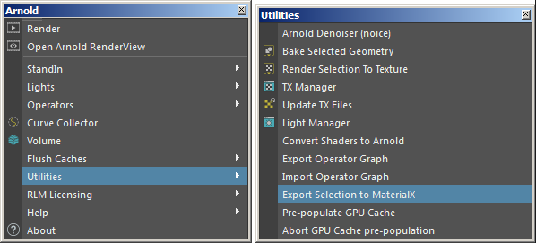
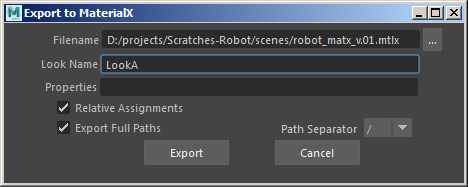
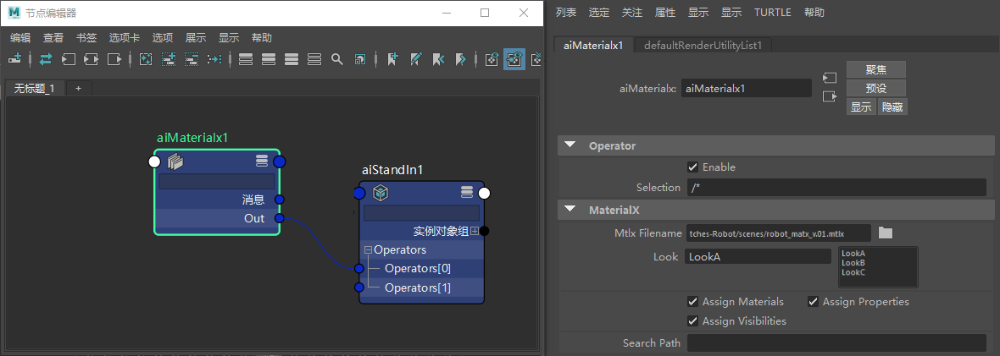

使用 MaterialX
导出 MaterialX 文件
- 首先，选择机器人几何体（要导出其着色器）并转到“Arnold > 工具 > 将当前选择导出到 MaterialX”(Arnold > Utilities > Export Selection to MaterialX)。

- 选择要保存 .mtlx 文件的位置并为其提供外观名称。

- 将不同的着色器指定给机器人模型（即红色和蓝色、绿色和黄色、黑色和金色）并重复以上过程，但选择“Look B”和“Look C”作为外观名称。选择保存到相同的 .mtlx 文件（外观将被附加到该文件）。
导入 MaterialX 文件
- 创建程序替代对象并打开 robot.abc 文件。
- 创建 MaterialX 运算符，并将其连接到替代对象的“输入”(Input)。
- 在 MaterialX 运算符中打开我们之前导出的 .mtlx 文件。您应该会看到我们保存到其中的 A、B 和 C 外观。
- 最后，将 /* 添加到当前选择。这会将外观添加到机器人选择。
- 渲染场景。您应该能够从 MaterialX 外观选择所需的外观，它将在渲染视图中更新！

希望您可以看到，导出不同的外观制作文件以用于管理流程中的复杂场景是多么轻松。